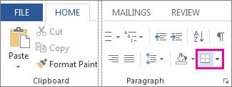
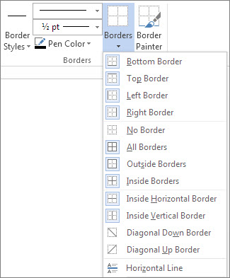
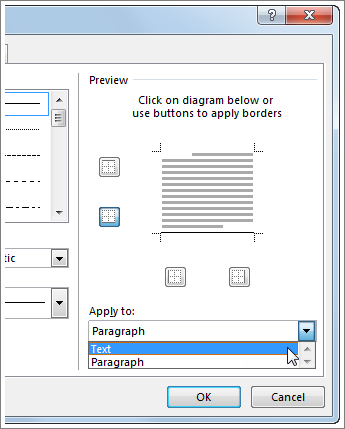
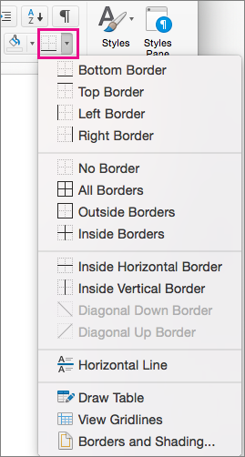
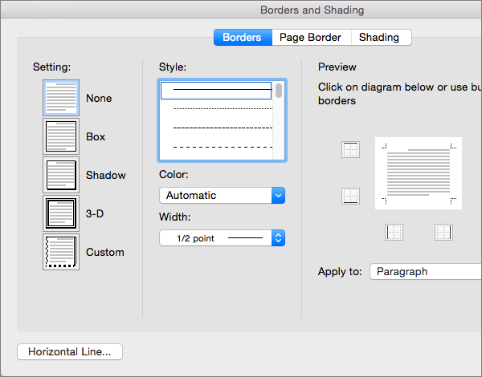

Sometimes, putting a border around text will work better in your document than inserting a text box or a one-cell table, to achieve a similar look.
Select a word, line, or paragraph.
Go to Home > Borders, and then open the menu of border choices.

Choose the type of border you want:
After you’ve selected your text and found the basic type of border you’d like, open the Borders menu again, and choose Borders and Shading.
Make your choices for style, color, and width, and then apply the choice with the buttons in the Preview section of the dialog box. When the preview is the way you want it, click OK.
Note: Make sure that the Apply to box has the correct setting: Text or Paragraph.
Select a word, line, or paragraph.
On the Home tab, click the arrow next to the Borders button.
In the Borders gallery, click the border style that you want to apply.
After you’ve selected your text and found the basic type of border you’d like, click the arrow next to the Borders button again, and then click Borders and Shading.
In the Borders and Shading dialog box, change Setting, Style, Color, and Width to create the border style that you want.
Note: To make sure the border style is correctly applied, set Apply to to Text or Paragraph. If you haven't selected any text, you can only set Apply to to Paragraph.
Click OK to apply your selected border styles.
Tip: You can also fill the area of your selected text with color. In the Borders and Shading dialog box, click Shading to select a color and patterns. The color you pick in the Fill list fills the rectangular area; the color you select from the Color menu is applied to the rectangular area in a pattern you select from the Style list.